What On-Call Duty is, who this manual is for, and the conventions used throughout.
On-Call Duty is a scheduling system that builds fair, conflict-free monthly on-call rosters for a hospital's doctors. As an administrator you maintain the list of doctors and their availability and then generate, fine-tune, and publish a duty schedule for any month. The system automatically respects each doctor's monthly duty limit, prevents back-to-back duties, avoids assigning a doctor who is unavailable, and balances weekend workload across the team.
There are two roles. This manual covers the administrator role in full.
| Role | What they do |
|---|---|
| Administrator | Plans and publishes duty schedules. Manages users, doctors, availability, schedules, and reports. This is the audience of this manual. |
| Doctor | Views their own published duties and personal dashboard, and records their own unavailability (vacation, sick, etc.). Doctors cannot edit schedules. |
When you sign in as an administrator, the top navigation bar gives you everything you need:
Home Users Availability Schedules Reports Profile · Logout
Doctors see a smaller menu (Home, My availability, Profile). If a doctor ever sees administrator-only pages, that is a mistake — administrator access is granted only on the Users page.
How to reach the application, sign in, handle the first-login password, and sign out.
Open the application's web address in a modern browser. You will see the staff sign-in screen.
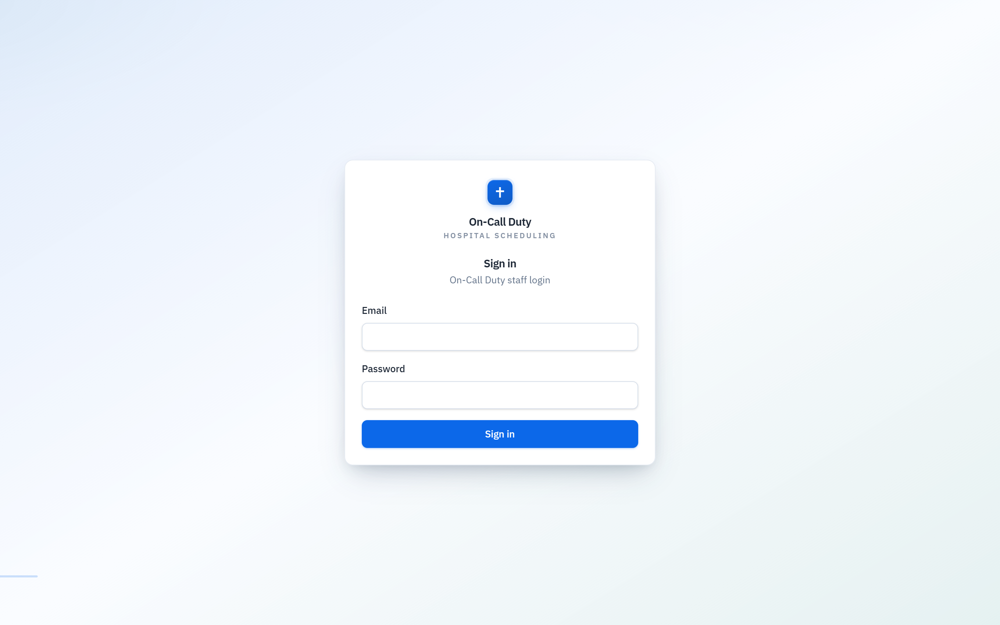
Enter the Email and Password given to you by whoever set up your account, then select Sign in.
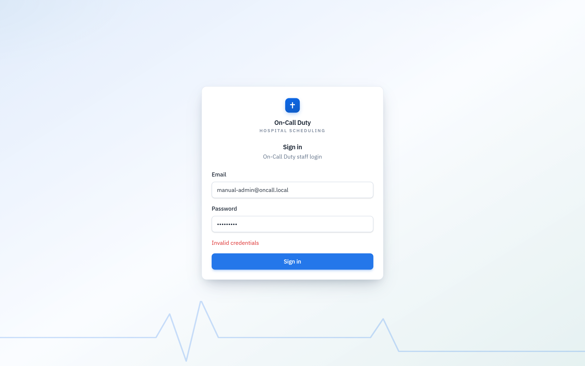
New administrator accounts are created with an initial password equal to the email address.
The system's seeded default administrator is admin@oncall.local with password changeme123.
On first sign-in, go to Profile and set a private password of your own (see Chapter 9).
After signing in you stay signed in as you move between pages, and your session is restored automatically if you reload the browser. To end your session, choose Logout at the top right. Always sign out on a shared computer.
The Home page is your starting point: a quick health check of any month's schedule.
At the top of the dashboard, enter a Year, pick a Month from the drop-down, and choose Apply. The cards and table below update for that month.
If a month has not been generated, the dashboard shows a clear empty state and a shortcut to create one.
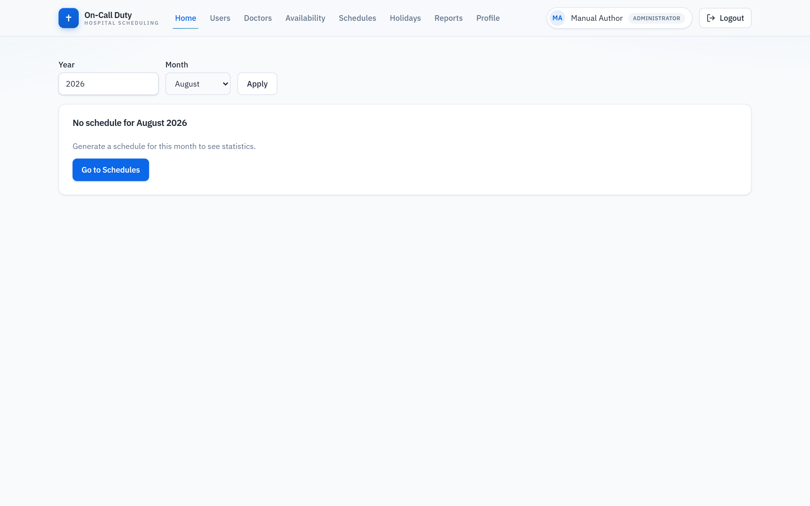
Once a schedule exists, the dashboard summarises its quality in three parts.
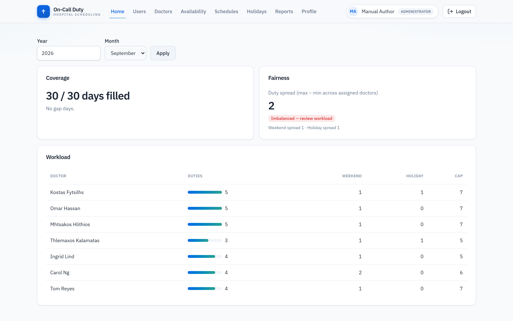
| Card | What it tells you |
|---|---|
| Coverage | How many of the month's days are filled (e.g. 30 / 30 days filled) and lists any gap days — dates still unassigned. “No gap days” means the month is fully covered. |
| Fairness | The duty spread (the difference between the busiest and quietest doctor). A spread of 0–1 is labelled Well balanced; anything larger is labelled Imbalanced — review workload. The weekend spread is shown too. |
| Workload table | Per doctor: number of duties (with a small bar), weekend count, and their monthly Cap. Inactive doctors are flagged. |
The Users page manages every login account — administrators and doctors alike — including each doctor's monthly duty cap.
Each row is one account, showing Name, Email, Username, Role (administrator or doctor), Status (active or disabled; disabled rows are highlighted), and Actions. Doctor rows also show their Max monthly duties — their personal cap (1–7); administrator rows show — in that column.
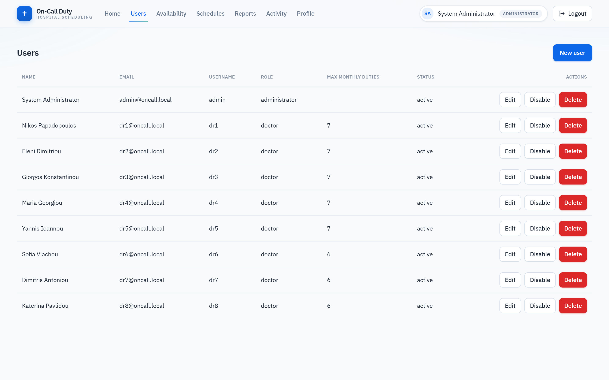
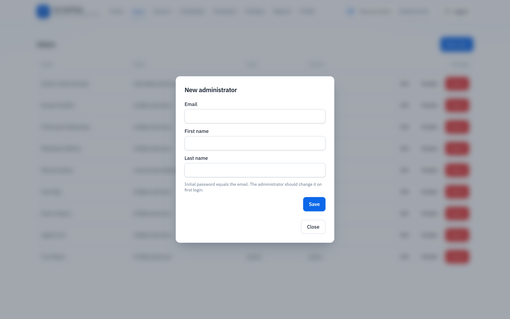
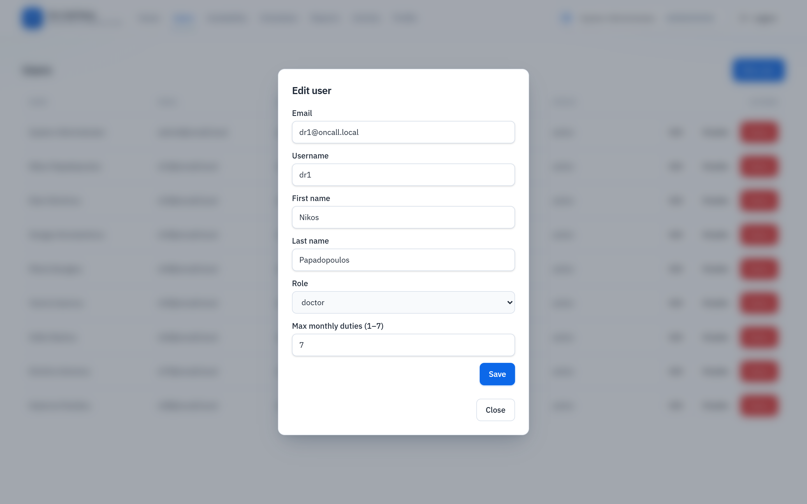
The Availability page records when a doctor is not available (vacation, sick leave, conferences, etc.). The scheduling engine never assigns a doctor on a day they are unavailable.
You can filter by Doctor and by a From / To date range, then choose Apply. The table shows each exclusion's Type, Start, End and optional Note.
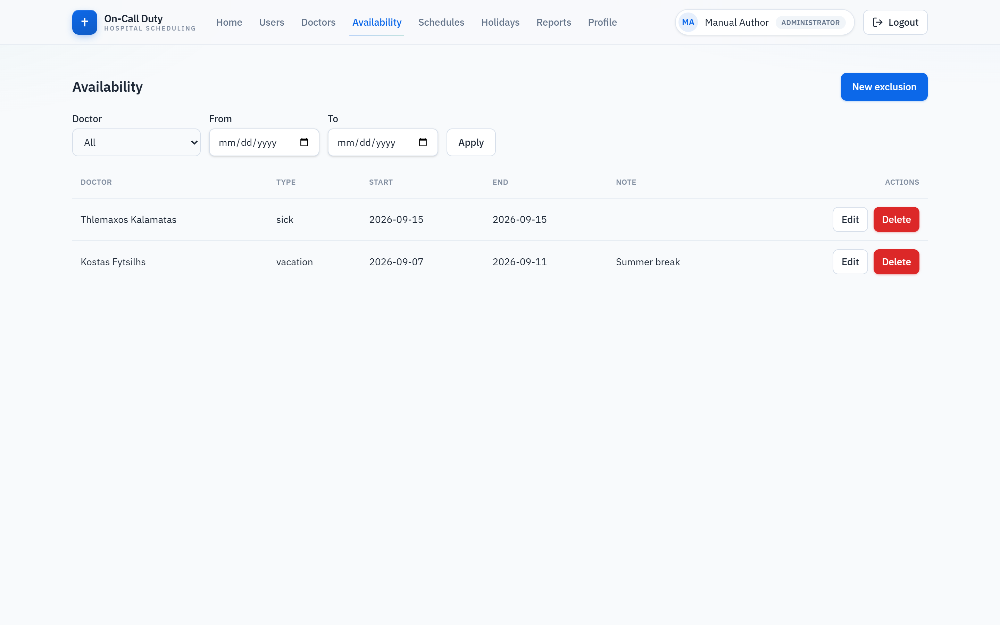
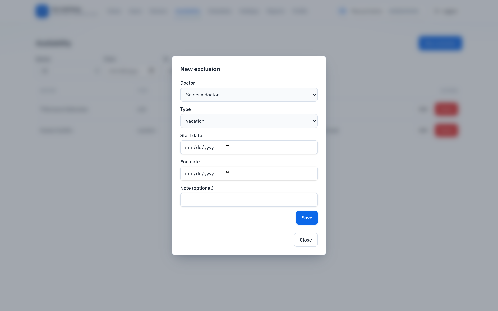
This is the core administrative workflow: Preview → resolve any conflicts → Generate → edit → Publish.
The Schedules page lists every generated month with its Status (Draft or Published), creation date, and a View action. Use the Year filter to narrow the list.
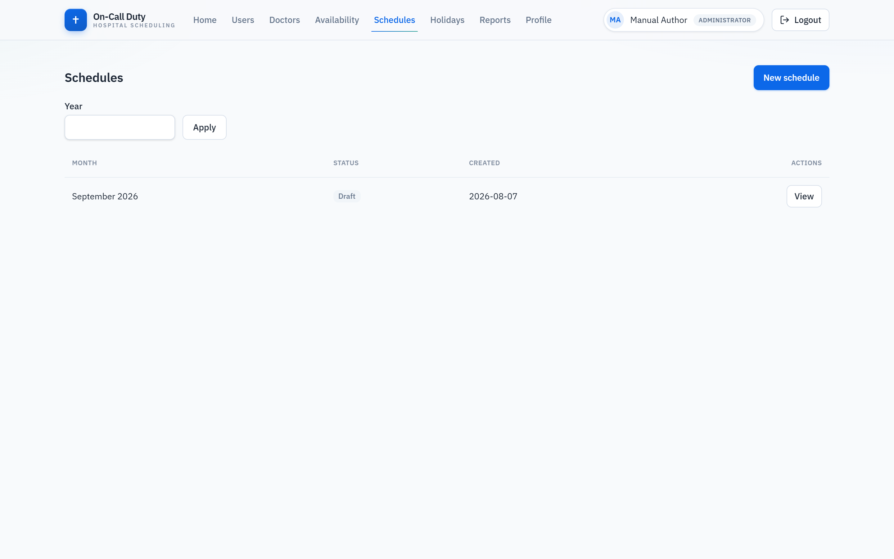
Before committing anything, preview a month to see whether it can be filled.
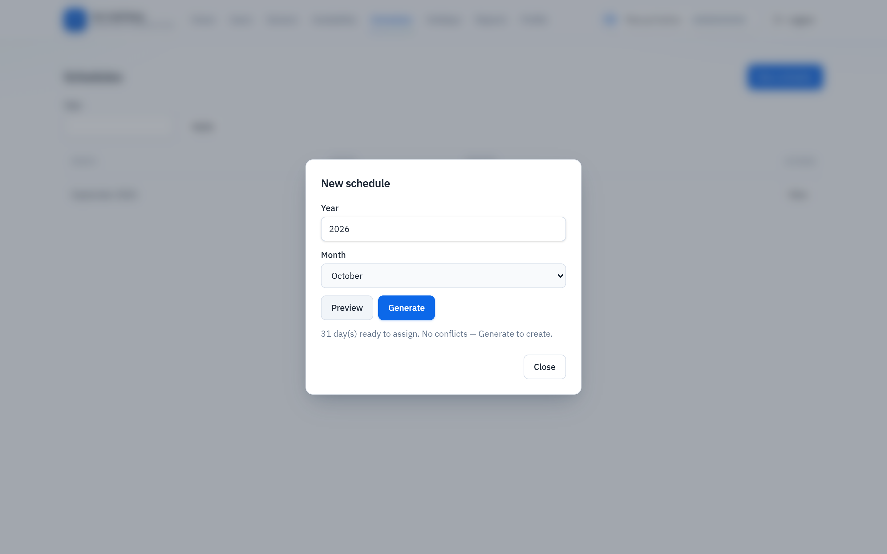
If some days cannot be filled, the preview shows a red conflict panel listing each unfillable date and why. Generate stays disabled until conflicts are cleared.
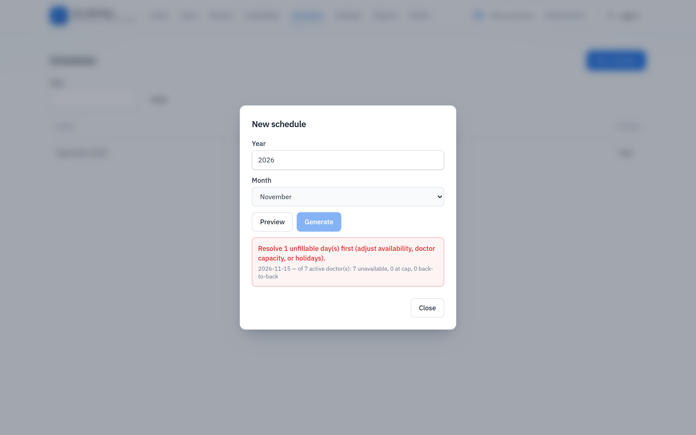
To resolve a conflict, address the cause and preview again:
Once the preview reports no conflicts, choose Generate. The schedule is created in Draft status and you are taken to its detail page. Generating is blocked if a schedule for that month already exists.
The detail page shows the full month: each date, the assigned doctor (or Unassigned), Flags (Weekend, Gap day), and the Reason the engine chose that doctor (hover the date for the explanation). While the schedule is a draft you can fine-tune it:
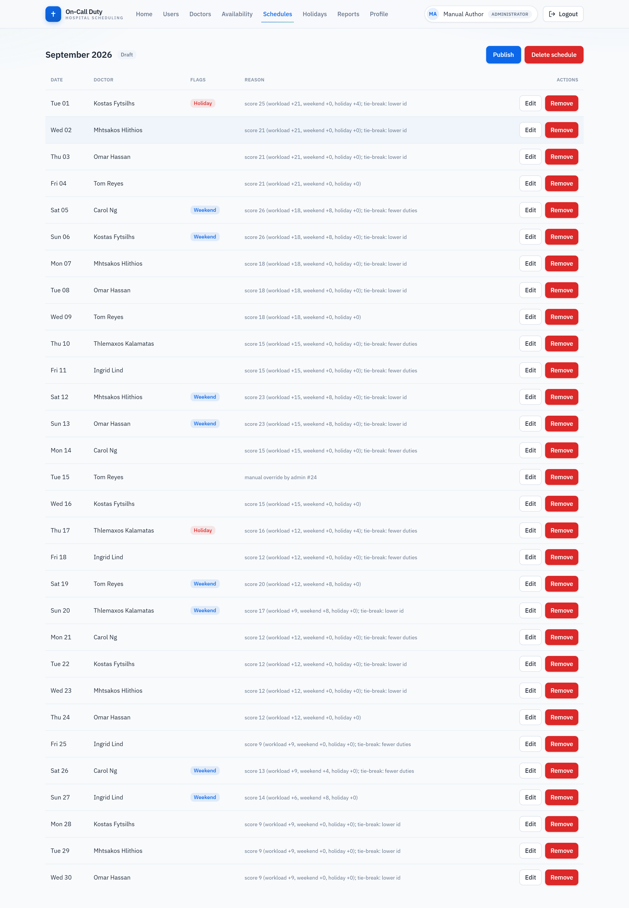
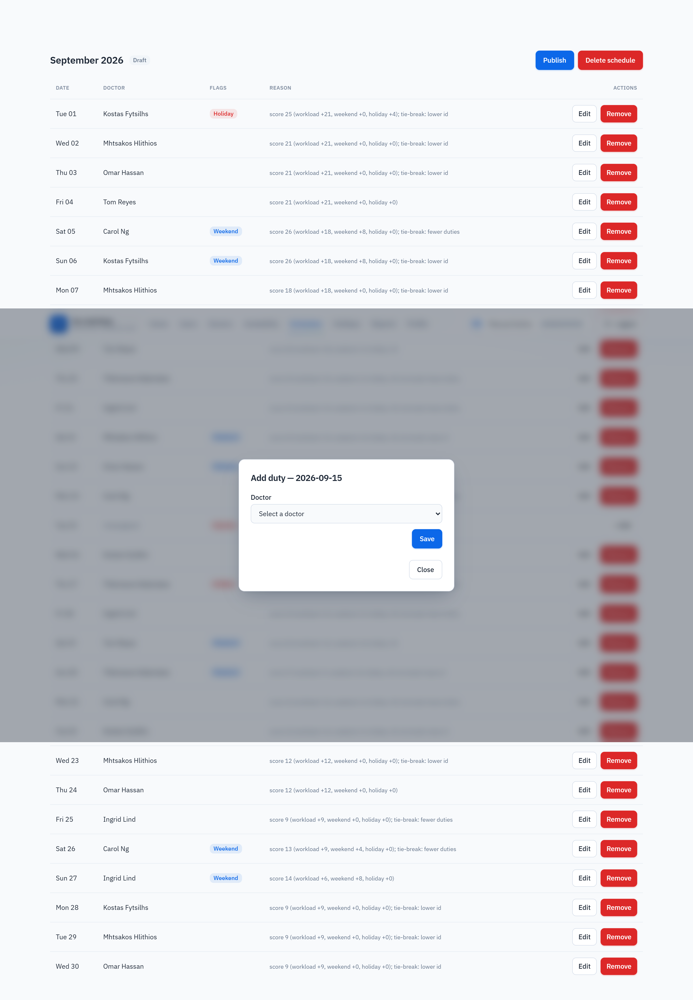
When the draft looks right, choose Publish and confirm. The status changes to Published and all editing is locked — duties can no longer be added, reassigned, or removed, and the schedule cannot be deleted.
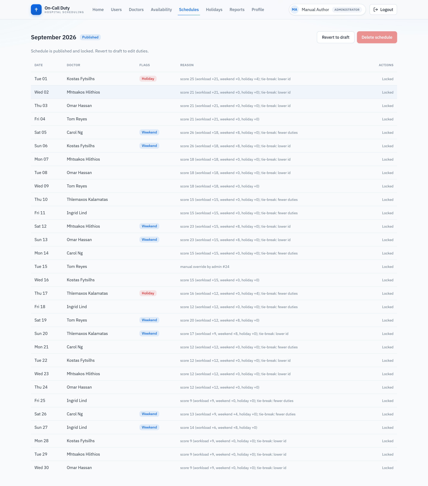
The Reports page produces a consolidated, printable monthly report — coverage, fairness, the full roster, and per-doctor workload.
Enter the Year, pick the Month, and choose Apply. The report is read-only; it cannot be edited here.
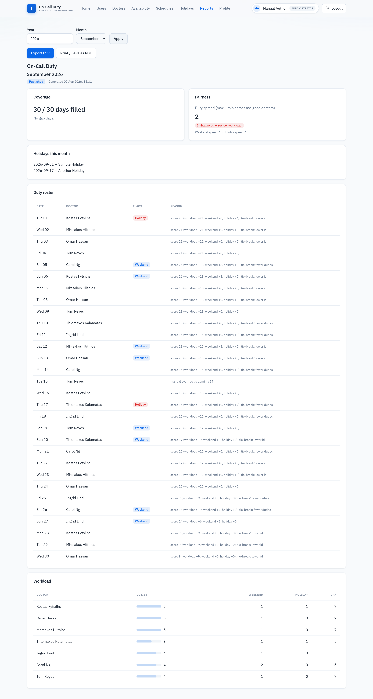
| Section | Contents |
|---|---|
| Title block | “On-Call Duty”, the month, the Published/Draft badge, and the generation timestamp. |
| Coverage | Days filled vs. total, and the list of gap days (if any). |
| Fairness | Duty spread with a Well balanced / Imbalanced badge, plus the weekend spread. |
| Duty roster | Day-by-day table: date, doctor (or Unassigned), flags, and the assignment reason. |
| Workload | Per doctor: duties (with a proportional bar), weekend count, and cap. Inactive doctors are greyed. |
Choose Export CSV to download the month's duty roster as a spreadsheet file named
oncall-YYYY-MM.csv. It opens directly in Excel, Google Sheets, or any CSV-aware tool, with columns
Date, Weekday, Doctor, Weekend, Reason. The button is disabled when there is no schedule for the selected month.
Choose Print / Save as PDF to open your browser's print dialog. From there you can print a paper copy or choose Save as PDF as a destination to produce a clean, formatted PDF of the report. The on-screen controls are hidden automatically when printing.
The Profile page is where you change your own password.
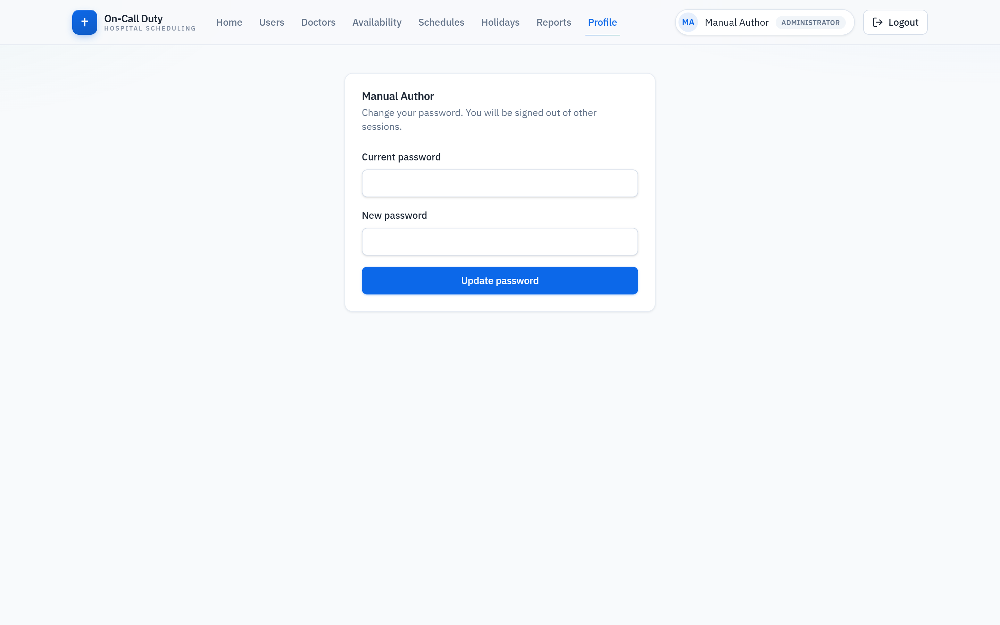
This chapter explains the rules the system enforces and how the engine produces a fair roster. You do not need to configure any of this — it helps you understand why a schedule looks the way it does.
| Regular weekday shift | 07:00–15:00. |
|---|---|
| On-call duty | 07:00 on the duty day until 15:00 the next day (overnight, handing over at 15:00). |
| On any day | On-call duties can fall on any day, including weekends. |
These can never be broken, by automatic generation or by a manual edit:
| Rule | Meaning |
|---|---|
| Monthly duty cap | A doctor cannot exceed their Max monthly duties (1–7, set on the Users page) in a given month. |
| No back-to-back | A doctor cannot be on duty the day immediately after a day they were already on duty. This is checked across month boundaries, so the last day of one month protects the first day of the next. |
| Availability | A doctor is never assigned on a date covered by one of their exclusions (vacation, sick, conference, other). |
| Active only | Disabled doctors are skipped entirely. |
Among the doctors who satisfy the hard rules for a given day, the engine picks the one with the best score, so that work is spread fairly:
Ties are broken deterministically: fewest total duties first, then fewest weekend duties, then lower doctor id. The result is stable — generating the same month with the same inputs always yields the same roster.
Every duty stores a human-readable Reason, visible on the schedule detail page (hover a date) and in the
report. It looks like score 18 (workload +12, weekend +6) and notes any tie-break used. Manual changes are
recorded as manual override by admin.
When a day cannot be filled (no eligible doctor), the preview lists it as a conflict with the exact breakdown (unavailable / at cap / back-to-back). You resolve conflicts as described in §6.3 before generating.
One or more days have no eligible doctor. Open the preview to see which days and why, then: raise a doctor's monthly cap, enable/add a doctor, or shorten a vacation. Preview again until there are no conflicts, then generate.
A doctor with duties in a draft schedule cannot be deleted — finish or discard the draft first, or choose Disable instead: they will be skipped by future schedules and cannot sign in, and you can re-enable them later. Their duties in already published schedules are kept.
You tried to edit, reassign, remove, or delete a duty on a published schedule. Choose Revert to draft at the top of the detail page to unlock editing, make your change, then publish again.
Disabled users are refused at sign-in. Re-enable the account on the Users page if access should be restored.
Edits to doctors and availability only affect schedules you generate after the change. An existing schedule keeps its assignments. To reflect changes, revert it to draft and adjust manually, or delete and regenerate it.
Both pages default to the current month. Enter the Year and Month you want and choose Apply.
Some spreadsheet tools need the comma delimiter stated explicitly. Use the “Import” or “Text to columns” feature and choose Comma as the delimiter.
The busiest and quietest doctors differ by more than one duty. This can happen when caps, availability, or the number of days force an uneven spread. Review the workload table and consider adjusting caps or availability, then regenerate.
| I want to… | Go to |
|---|---|
| See how a month is shaping up | Home (dashboard) |
| Create or manage user accounts (administrators and doctors) | Users |
| Add a doctor / set their monthly cap | Users |
| Record a vacation, sick leave, etc. | Availability |
| Generate, edit, and publish a month | Schedules → (month) → detail |
| Export or print a monthly report | Reports |
| Change my password | Profile |
| Field | Rules |
|---|---|
| Password (any) | At least 6 characters. New password must differ from the current one. |
| Email (any) | Must be a valid email address; unique per account. |
| Max monthly duties | Whole number from 1 to 7 (default 7). |
| Exclusion dates | Format YYYY-MM-DD; end date on or after start date; inclusive whole days. |
| Exclusion type | One of Vacation, Sick, Conference, Other. |
| Schedule year / month | Year 1970–2100; month January–December. One schedule per month. |
| Term | Meaning |
|---|---|
| Draft | A schedule you can still edit. Not yet visible to doctors as final. |
| Published | A locked schedule. Visible to doctors; editing is disabled until reverted. |
| Duty | A single doctor assigned to a single day (07:00 → next day 15:00). |
| Gap day | A day in the month with no doctor assigned. |
| Cap | A doctor's maximum duties per month (Max monthly duties, 1–7). |
| Exclusion | A date range a doctor is unavailable (vacation, sick, conference, other). |
| Duty spread | Busiest minus quietest doctor's duty count; 0–1 is “Well balanced”. |
| Reason | The engine's stored explanation for an assignment. |
| Conflict | A day the engine cannot fill under the hard rules. |